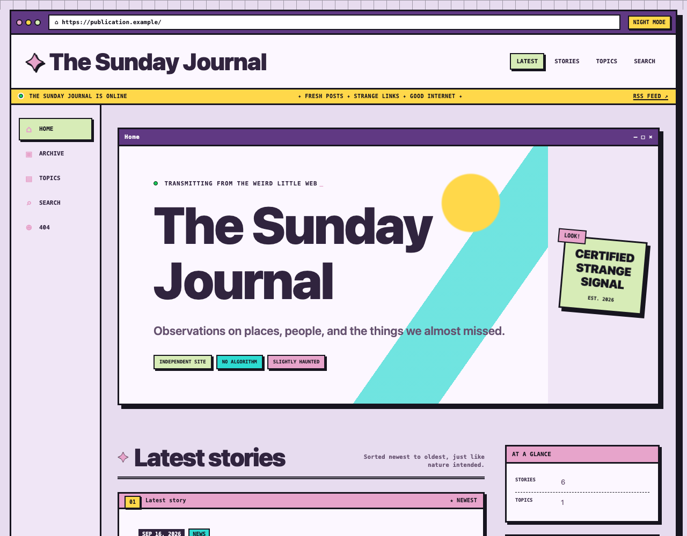
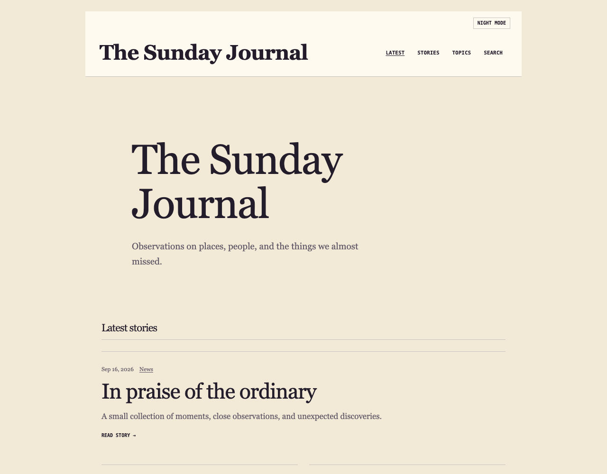
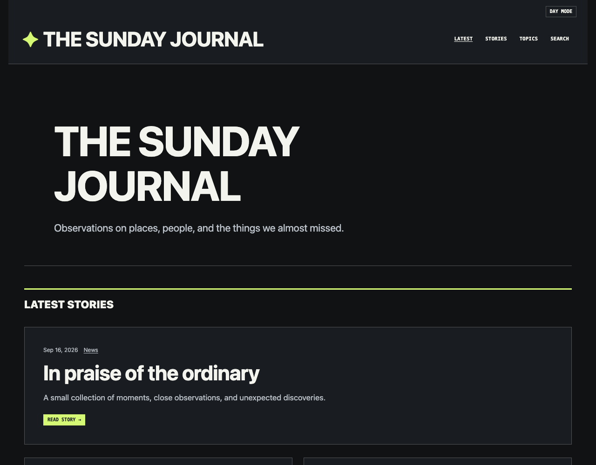
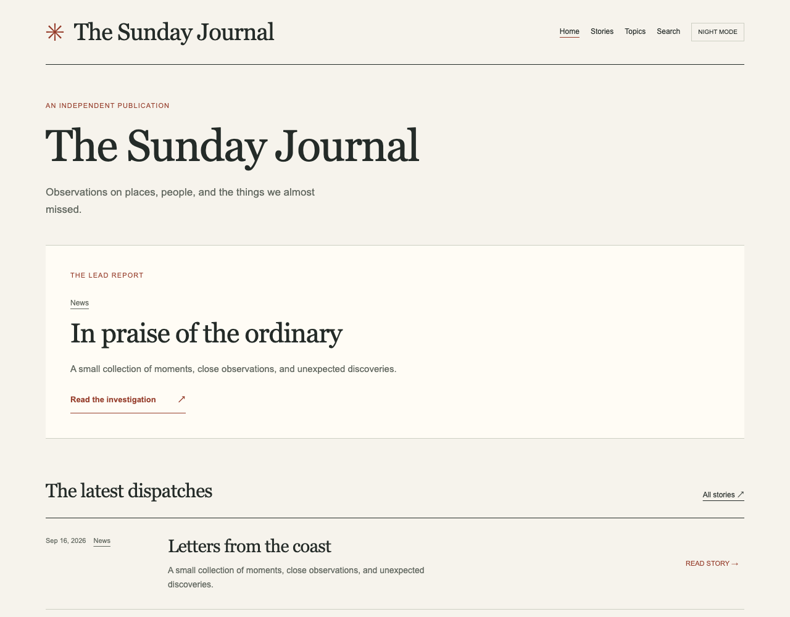
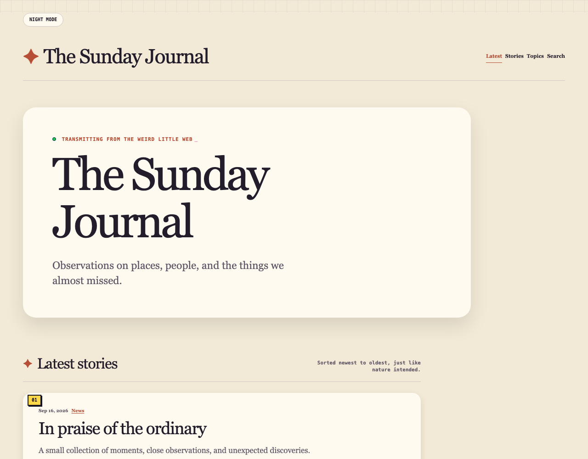
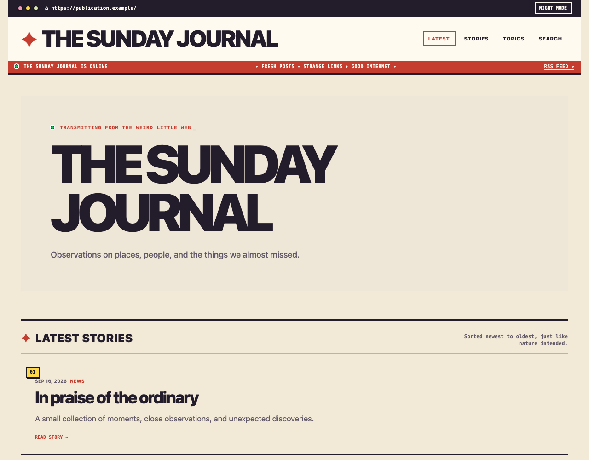

EDITION 1 · PLAYFUL / NOSTALGICHypertext DiaryA bright little browser window for people who want the web to feel personal again.For personal blogs, creative journals, internet culture.
EDITION 1 · QUIET / LITERARYField NotesA literary notebook that lets observation and long-form writing take the foreground.For essays, travel journals, independent writers.
EDITION 1 · BOLD / NOCTURNALAfter HoursA late-night culture desk with loud headlines, sharp edges, and room for image-led stories.For music and culture, photography, design publications.
EDITION 1 · CONSIDERED / TACTILEBulletinA restrained independent publication where dispatches are treated like a small printed journal.For independent magazines, essays, cultural reporting.
EDITION 1 · WARM / HUMANSunroomA sunny reading room where the publication feels collected, human, and close at hand.For personal essays, lifestyle journals, small magazines.
EDITION 1 · DIRECT / GRAPHICMono PressA confident print desk translated to the open web: direct, structured, and impossible to mistake for a feed.For newsletters, culture writing, design studios.